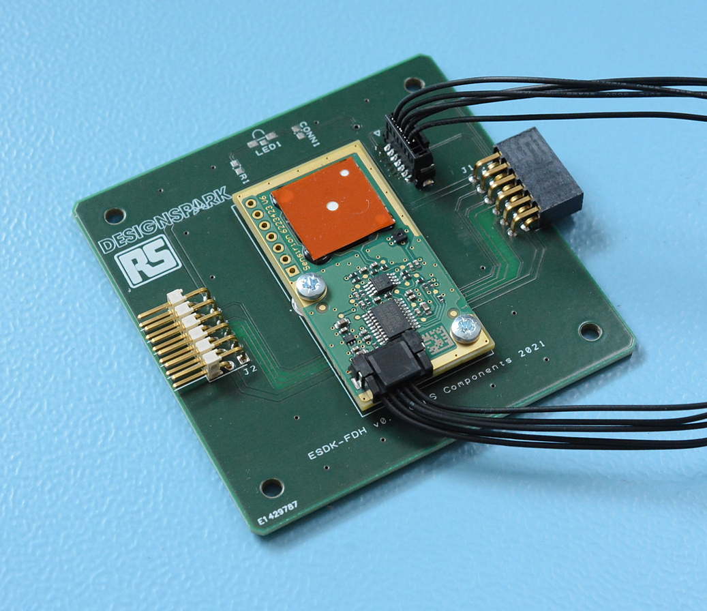
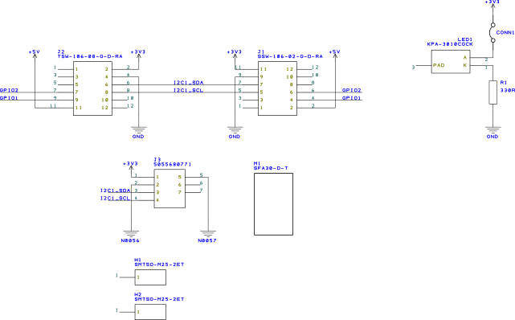

1.1.7. Formaldehyde Sensor (FDH)
1.1.7.1. Introduction
The ESDK-FDH board utilises a Sensirion SFA30 formaldehyde detection module that makes use of an electrochemical sensing cell.
1.1.7.2. Schematic diagram
1.1.7.3. Theory of operation
The ESDK-FDH board is primarily an interface board between the connector on the SFA30 module and the ESDK ecosystem connector. The Sensirion SFA30 module is capable of measuring formaldehyde concentrations from 0-1000ppb with a stated accuracy of ±20 ppb or ±20% m.v., whichever is larger. A temperature and relative humidity sensor is also provided on the module (mainly for use by the module microcontroller) but these are also exposed over the I2C bus.
The sensing element features a quoted lifespan of greater than six years provided the conditions are kept at standard conditions of 50 ±5% RH and 25 ±3°C.
1.1.7.4. Board layout